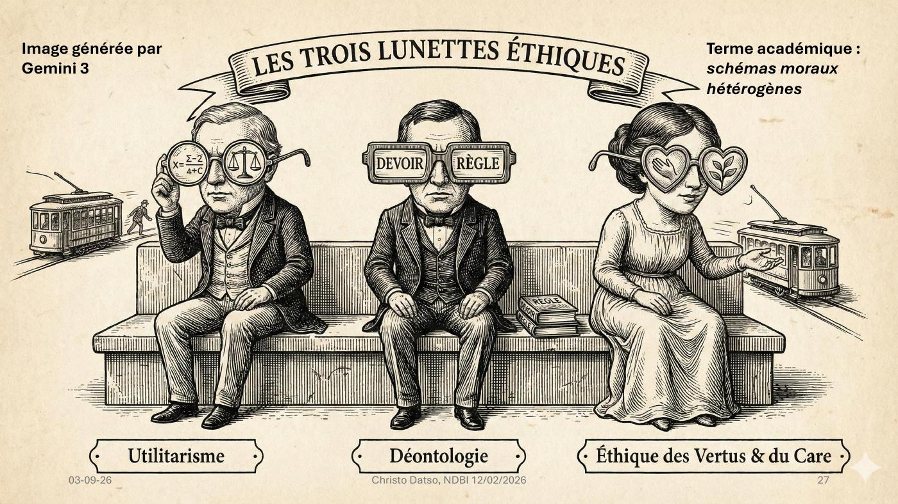

DIAPOSITIVES 26 à 30
Le modèle simplifié annoncé à l’agenda : pourquoi des gens de bonne foi ne sont pas d’accord.
La réponse de l’exposé n’est pas que certains ont tort. C’est qu’il y a trois camps, trois « lunettes éthiques » :

L’image fait le travail d’une définition : les trois regardent la même scène — le même tramway passe derrière eux — et n’en voient pas la même chose. Le désaccord n’est pas un défaut d’information.
| Grille | Ce qu’elle regarde |
|---|---|
| Utilitarisme | → performance, efficacité, retour sur investissement |
| Droits / déontologie | → conformité, lignes rouges |
| Care / vertus | → confiance, asymétries de pouvoir |
Utilitarisme / conséquentialisme — on juge aux résultats (bénéfices et risques agrégés).
« Si ça réduit les agressions de 20 %, le jeu en vaut-il la chandelle ? »
Déontologie / droits — certaines atteintes sont inacceptables, même si
« efficaces » : vie privée, non-discrimination, autonomie.
« A-t-on le droit de traiter tout le monde comme un suspect potentiel ? »
Éthique des vertus & du care — qualité des pratiques, caractère des institutions,
vulnérabilités, relations de dépendance.
« Quel type de société cela façonne-t-il ? »
La diapositive suivante déploie un tableau à trois colonnes, présenté comme un « travail de synthèse réalisé avec OpenAI ChatGPT 5.2, 7 février 2026 ». Il est reproduit ici intégralement — c’est l’outil analytique le plus complet de l’exposé.
| Dimension | Utilitarisme (conséquentialisme) | Déontologie & droits fondamentaux | Vertus & care |
|---|---|---|---|
| Question centrale | « Quelle option maximise le bien-être total / minimise les torts ? » | « Quelles actions sont interdites/obligatoires, même si elles auraient de bonnes conséquences ? » | « Quelle réponse exprime un bon caractère et prend soin des personnes concernées, dans ce contexte ? » |
| Ce qui compte le plus | Résultats globaux, souvent en utilité attendue | Règles, devoirs, respect de la personne, droits (dignité, équité procédurale, non-discrimination, vie privée…) | Jugement pratique, qualités morales (compassion, honnêteté, courage…), relations, vulnérabilité, non-abandon |
| Logique de décision | Calcul et agrégation (coûts-bénéfices, risques, probabilités) | Contraintes (« on ne fait pas ça »), universalisation, « ne pas traiter comme un moyen » | Délibération contextuelle : « que ferait une personne vertueuse ? », réponse attentive et responsable |
| Forces | Très utile pour les politiques publiques, l’allocation de ressources, l’optimisation de sécurité | Protège contre l’arbitraire et les sacrifices d’individus ; garde-fous clairs | Sensible aux situations réelles, aux effets vécus, à la confiance et à la dignité relationnelle |
| Risques et angles morts | Peut justifier des atteintes à des individus (sacrifices) ; « tyrannie du total » | Peut être rigide (des règles qui empirent les conséquences), conflits de droits | Peut sembler moins « calculable » ; risque de favoritisme ou d’incohérence si mal cadré |
| Dilemme IA no 1 surveillance |
Déployer une surveillance algorithmique massive si elle réduit fortement agressions et terrorisme — même au prix de la vie privée | Refuser la surveillance indiscriminée : violation du droit à la vie privée, risque d’abus, présomption d’innocence | Chercher une solution qui préserve la confiance : minimisation des données, contrôle humain, ciblage proportionné, attention aux vulnérables |
| Dilemme IA no 2 justice, erreur |
Utiliser un outil de « prédiction » (récidive, fraude) si, statistiquement, il réduit le crime global — même avec des erreurs individuelles | Interdire ou limiter fortement si cela viole la non-discrimination, le droit à un procès équitable, la transparence, la contestabilité | Prioriser la dignité : expliquer, écouter, permettre la contestation, éviter l’humiliation et la stigmatisation automatisée |
| Dilemme IA no 3 triage santé |
L’IA doit allouer lits et soins pour maximiser les vies sauvées / QALYs, même si certains groupes perdent plus souvent l’accès | Certaines règles ne se marchandent pas : égalité de considération, interdiction de critères injustes, consentement, respect des patients | Mettre l’accent sur l’accompagnement, la compréhension des situations (isolement, handicap, précarité), et la responsabilité de ne pas « abandonner » |
| Dilemme IA no 4 véhicules autonomes |
Programmer l’IA pour minimiser le nombre total de morts, même si cela sacrifie le passager dans de rares cas | Interdit de « tuer intentionnellement » un innocent : ne pas concevoir un système qui décide de sacrifier quelqu’un comme moyen | Concevoir pour prudence, humilité, transparence ; focalisation sur la prévention, la réduction des risques, la responsabilité et la confiance sociale |
| Type d’exemple « où ça l’emporte sur tout » | Accepter une atteinte à la vie privée si les bénéfices de sécurité ou de santé sont énormes et démontrables | Refuser une atteinte (profilage, torture, punir un innocent) même si elle « marcherait » | Privilégier une réponse humaine (explicabilité, accompagnement, non-abandon) même si elle est moins « optimale » sur les métriques |
QALYs : Quality-Adjusted Life Years, années de vie pondérées par la qualité.
Ce qui rend ce tableau utile n’est pas qu’il départage — il ne départage rien. C’est qu’il rend prévisible le désaccord : sur n’importe quel cas nouveau, on sait d’avance quelles trois réponses vont être données, et pour quelles raisons. C’est ce que l’agenda annonçait sous le nom de « modèle simplifié pour aborder des dilemmes éthiques ».